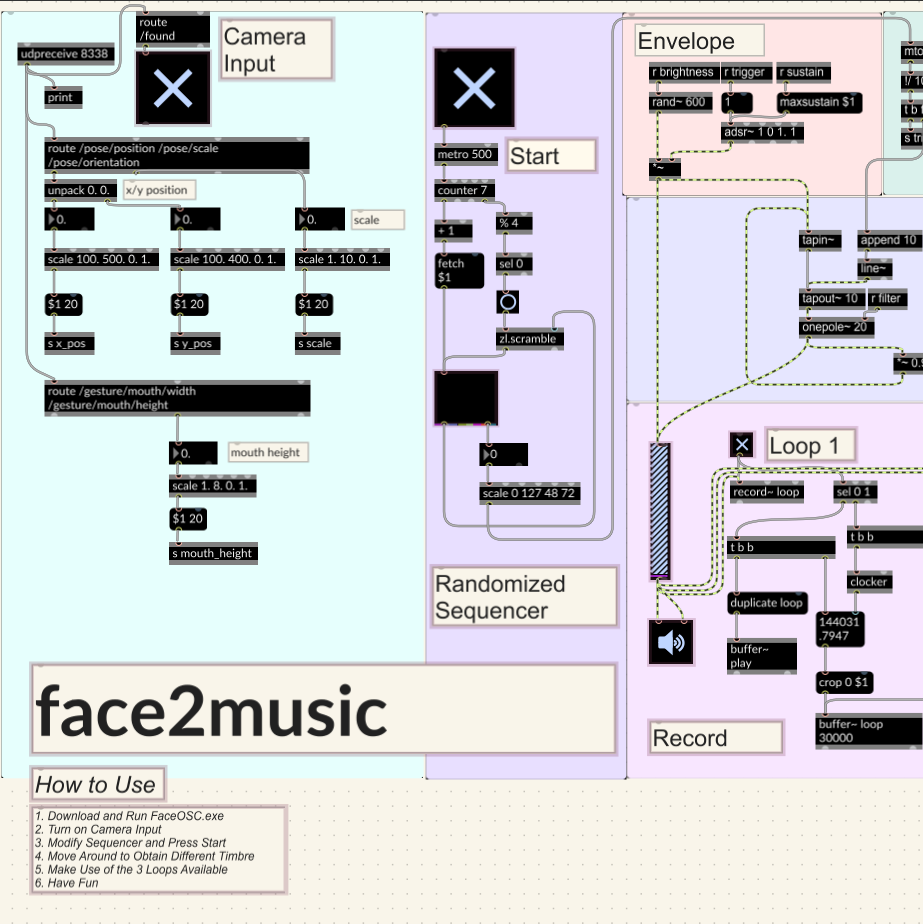
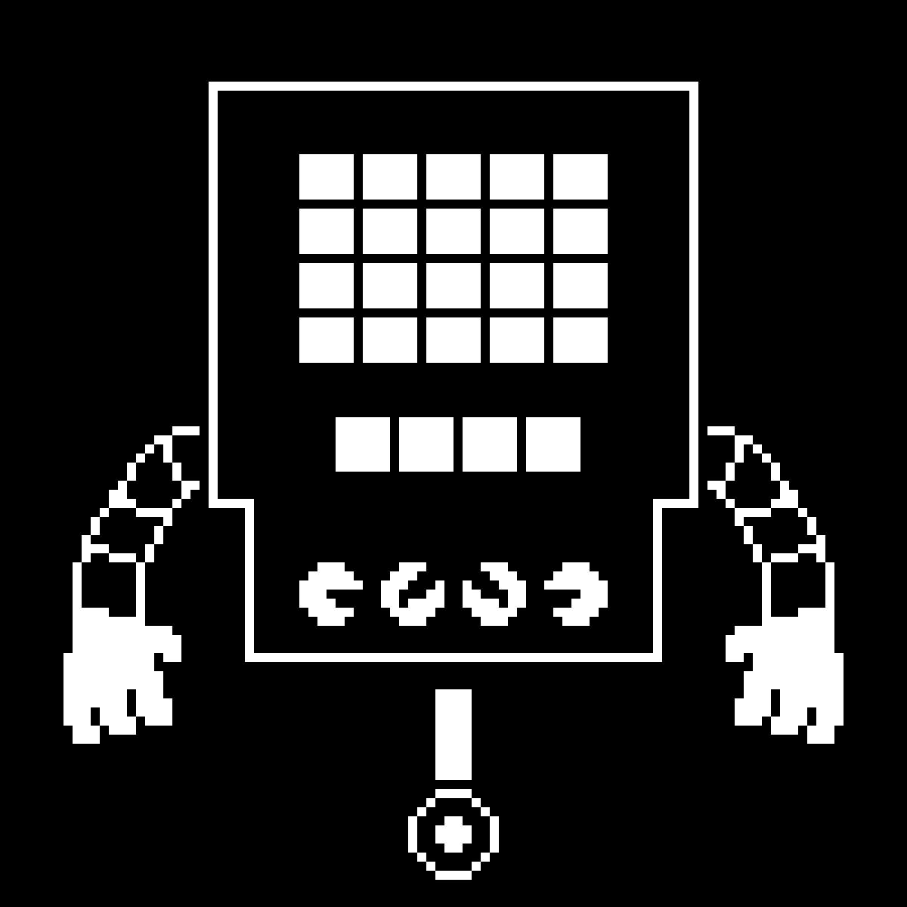
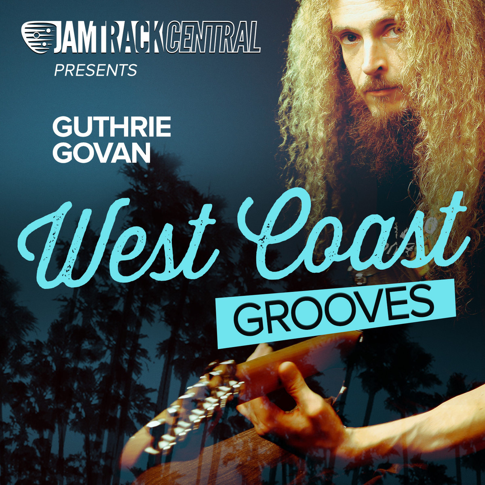
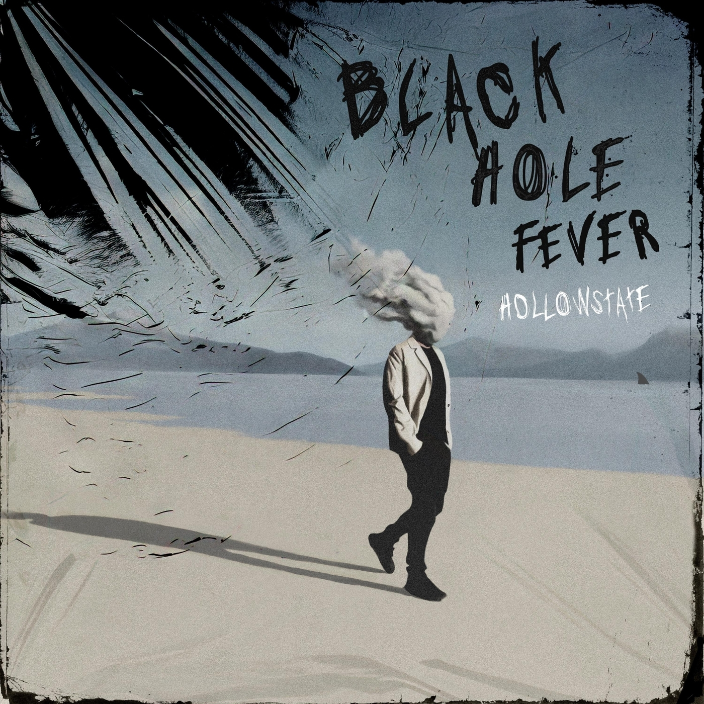
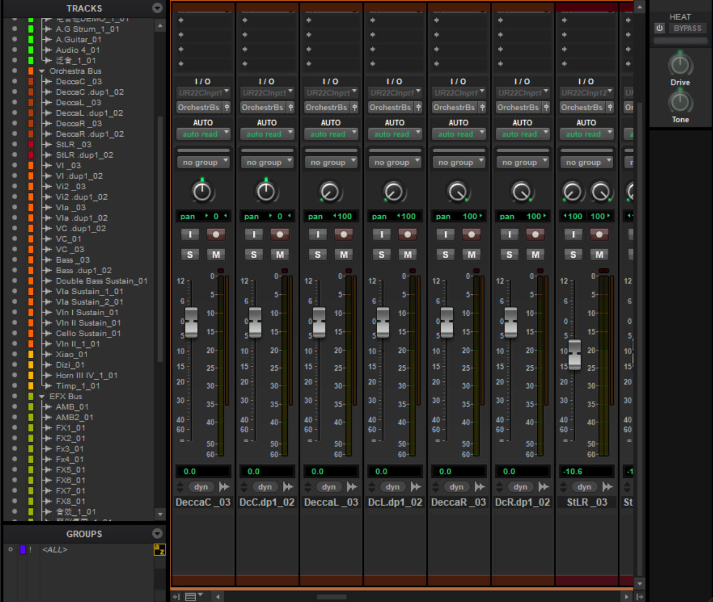
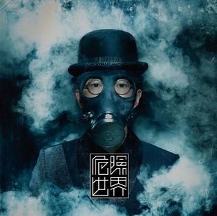
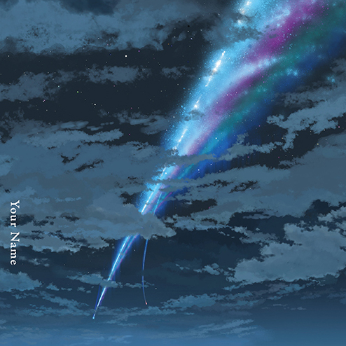

02 / Original musicComposition
Forbes Avenue
Midwest emo · Guitar · Sampling · Sound design
View project ↗Music · Technology
I explore the space between music and technology — from producing and composing sound to building interactive systems and designing physical audio hardware.
Explore selected workRyan ZhangCarnegie Mellon University
Music & Technology · Class of 2030
01 / Selected work
A collection of recordings, experiments, and objects — each exploring a different way to make ideas tangible.

A hands-on exploration of audio electronics, PCB layout, enclosure design, and fabrication.
Midwest emo · Guitar · Sampling · Sound design
View project ↗
Max/MSP · Sequencing · Karplus–Strong · FaceOSC
View project ↗
Techno · Transcription · Arrangement
View project ↗
Jazz guitar · Cover · Performance
View project ↗
Hard rock · Mixing · Hollowstate
View project ↗
Chinese folk · Mixing · Epic arrangement
View project ↗
Mandopop · R&B · Musical analysis
View project ↗
Acoustic arrangement · Transcription
View project ↗02 / About the practice
I’m interested in how ideas move between sound, software, and physical form. Whether I’m shaping a mix, building an interactive musical system, or laying out a circuit board, I enjoy turning abstract ideas into experiences people can hear, use, and explore.
03 / Contact
Open to creative collaborations, music projects, and interesting technical experiments.
zwd071023@outlook.com ↗